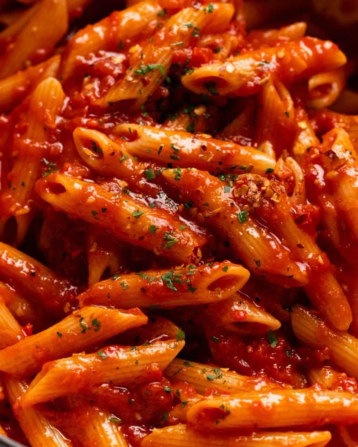

Pâtes

Description
Un plat de pâtes simple et savoureux, préparé avec une sauce tomate maison. Rapide à faire, idéal pour un repas réconfortant en semaine.
Ingredients
- 400g de pâtes (spaghetti, penne, ou autre)
- 400g de tomates fraîches ou pelées
- 2 gousses d'ail
- 1 oignon
- Huile d'olive
- Basilic ou origan
- Sel, poivre
- Parmesan râpé (optionnel)
Steps
- Faire cuire les pâtes dans une grande casserole d'eau salée, selon le temps indiqué sur l'emballage.
- Pendant ce temps, faire revenir l'oignon et l'ail dans l'huile d'olive.
- Ajouter les tomates, assaisonner avec sel, poivre et herbes, laisser mijoter 15 minutes.
- Égoutter les pâtes et les mélanger à la sauce.
- Servir chaud, avec du parmesan râpé si désiré.
Home